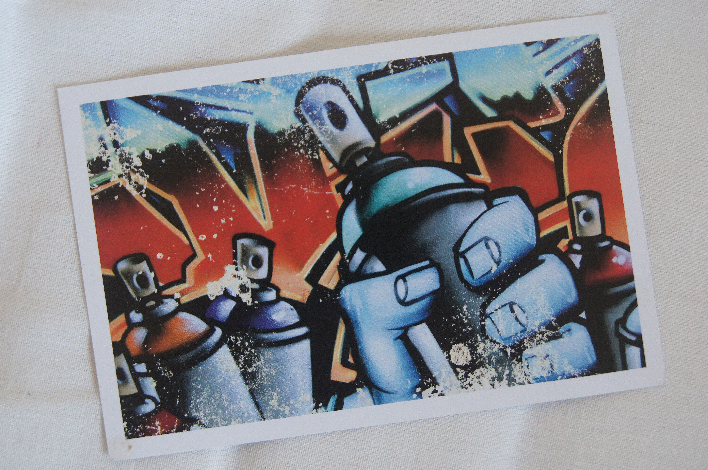

3 октября мы с моей подругой ездили на дизайн-завод FLACON. Как известно, FLACON — пространство с множеством стрит-арта, поэтому этот день я опишу с помощью этой открытки, на которой изображено граффити. Там мы посетили выставку "Опасный расклад" — совместный проект иллюстраторов Bang! Bang! Studio, посвященный Америке 20-30 годов: эпохе гангстеров, сухого закона и джаза.
